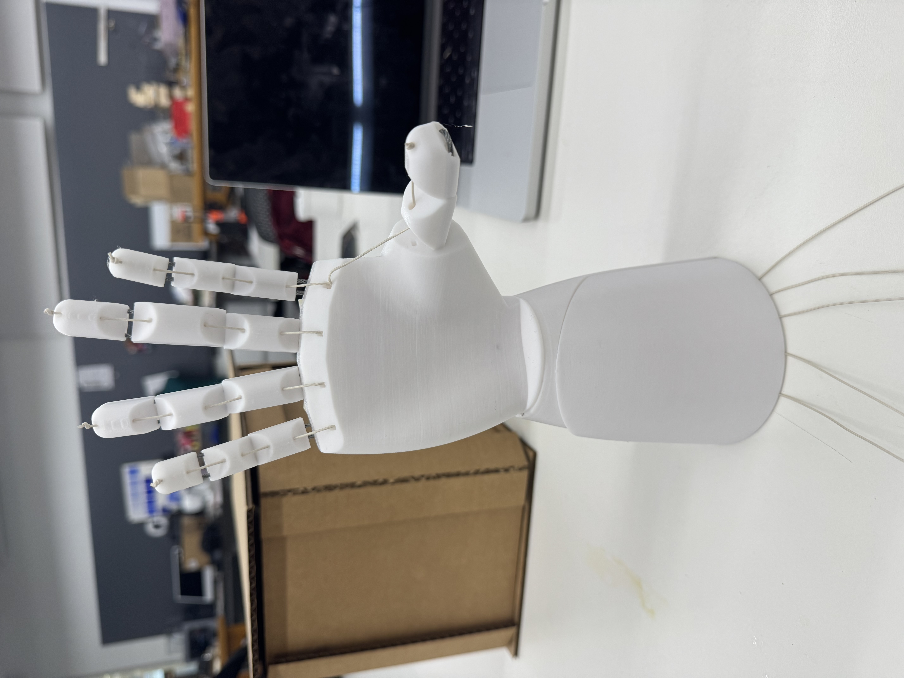
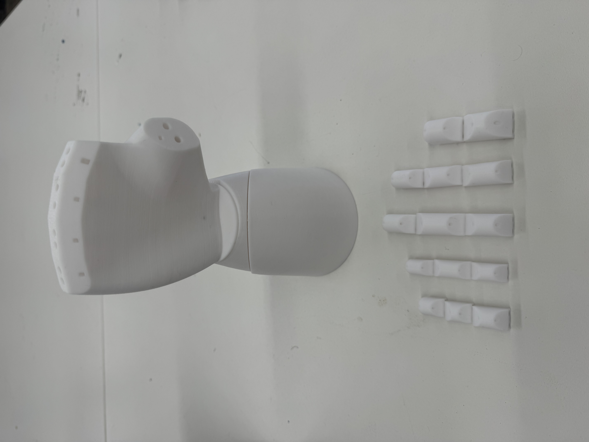
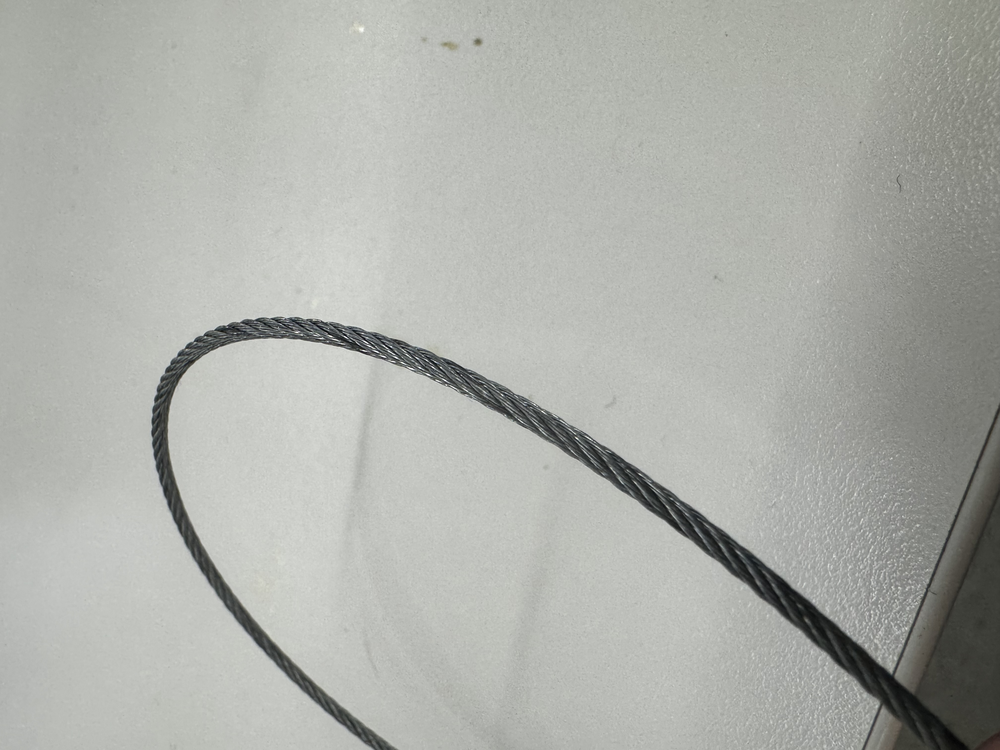
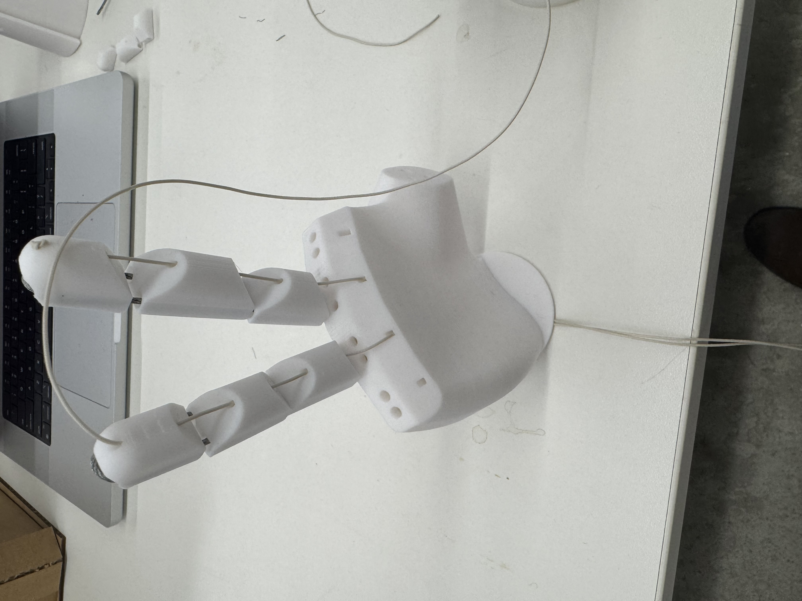

<div class="textcontainer">
<p class="margin"> </p>
<h3>Week 9: Radio, WiFi, Bluetooth (IoT)</h3>
<p><br></p>
<p></p>
<p><br></p>
<p class="margin"> </p>
<div class="flexrow">
<a id="btn" href="wk9.zip" download>Download my files from this week!
</a>
</div>
<p class="margin"> </p>
We're asked to work with a partner or group of 3 to program one or more microcontroller(s) to obtain and
respond to information from the internet or radio. The project should include at least one input and one output.
<p><br></p>
Our group was Hiteyjit (Joey) and I, and together we worked on a glove-controlled robotic hand. One person puts on
a glove with resistor sensors on each finger. When a finger is bent, the sensor reads a different resistance into the
ESP32 glove microcontroller. This ESP32 reads the data from all 5 fingers every so often and relays the information
over ESP-Now to a second ESP32 located in the robotic hand. Based on the data, it'll turn servos attached to strings,
and each string will in turn move a specific finger up or down.
<p><br></p>
<h3>Part 1: Hand</h3>
The first part was the hand. I downloaded from 'Viral Science' online their 3D files for a robot hand. All of those files
can be found in the downloadable button, in stl format.
<o>
<li>Once downloaded, open them up in Prusa Slicer. You can do multiple files in the same print!</li>
<li>Reposition the stl files in the print so they are not overlapping.</li>
<li>Select supports for base and 15 percent infill. We used a white PLA material to print.</li>
<li>Plan your time, it took us in total 24 hours to print.</li>
</o>
<p><br></p>
<p></p>
<p><br></p>
Once done, next, gather string and either (1) super-thin rubber with scissors or (2) bendable metal wire with wire cutters. In any case, you
want that second material to be 'firm but bendable'. We used twisted wire (see below).
<o>
<li>Start with one set of finger components. Take the wire and weave it through the holes in the fingers.</li>
<li>Have a decent amount of wire at the ends of the finger for support. You can either tape it to the back of the hand or insert it into the
pre-cut out pairs of holes in the hand and tie what remains in the back of the hand. We did the former because metal was not as bendy as rubber.</li>
<li>Take the string and insert it through the tinier, center holes in the fingers.</li>
<li>Push it down into the string-hand hole for its respective finger. The string will pop out the bottom of the hand.</li>
<li>When done, tie the string at the top of the finger and cut off any excess.</li>
</o>
<p><br></p>
<div class="img-container">
<p></p>
<p></p>
</div>
<p><br></p>
Repeat this for all five fingers. Here is what it looks like:
<p><br></p>
<p><br></p>
Finally, you'll want to grab 5 servos and connect them to the stings by wrapping the string around the servo handle.
You don't need to technically need to use the servos just yet, and in fact I recommend testing them in isolation with
the code before tying them... if the start and end rotation position is not properly set, you might send a finger flying or
over-rotate it.
<p><br></p>
<h3>Part 2: Glove</h3>
TODO
<p><br></p>
<h3>Part 3: Code and Integration</h3>
Finally, we integrate the microcontrollers. Here are our circuits. The left shows the circuit for the
hand and the right shows the circuit for the glove. We'll use ESP-Now to connect the two ESP32s together.
<p><br></p>
<div class="img-container">
<img src="circuit1.jpeg">
<img src="circuit2.jpeg">
</div>
<p><br></p>
Step 1: determine the MAC address of the hand-ESP32 (receives data). Copy-paste this code into ArduinoIDE
with the correct selected Module (ESP32 Dev Module) and port (usually dev/.../serial). Click 'upload' to
upload the code to the ESP32 and watch the Serial output on ArduinoIDE for the outputted MAC Address.
<div class="code-box">
<pre><code class="language-arduino">
/*
https://randomnerdtutorials.com/esp-now-esp32-arduino-ide/
Rui Santos & Sara Santos - Random Nerd Tutorials
Complete project details at https://RandomNerdTutorials.com/get-change-esp32-esp8266-mac-address-arduino/
Permission is hereby granted, free of charge, to any person obtaining a copy of this software and associated documentation files.
The above copyright notice and this permission notice shall be included in all copies or substantial portions of the Software.
*/
#include WiFi.h
#include esp_wifi.h
void readMacAddress(){
uint8_t baseMac[6];
esp_err_t ret = esp_wifi_get_mac(WIFI_IF_STA, baseMac);
if (ret == ESP_OK) {
Serial.printf("%02x:%02x:%02x:%02x:%02x:%02x\n",
baseMac[0], baseMac[1], baseMac[2],
baseMac[3], baseMac[4], baseMac[5]);
} else {
Serial.println("Failed to read MAC address");
}
}
void setup(){
Serial.begin(115200);
WiFi.mode(WIFI_STA);
WiFi.STA.begin();
Serial.print("[DEFAULT] ESP32 Board MAC Address: ");
readMacAddress();
}
void loop(){
}
</code></pre>
</div>
<p><br></p>
Step 2: with the MAC address, copy-paste this code into a new file for the glove-ESP32 (sends data). Change the MAC
address to the one from Step 1. Upload the code to the glove-ESP32.
<div class="code-box">
<pre><code class="language-arduino">
// PHYS 70 Glove Microcontroller
// Imports and Installs
#include esp_now.h
#include WiFi.h
#include Adafruit_MPU6050.h
#include Adafruit_Sensor.h
// Variables
unsigned long lastTime = 0;
const unsigned long interval = 100;
uint8_t broadcastAddress[] = {0XC0, 0X5D, 0X89, 0XAF, 0XE8, 0X6C};
// message sent by glove; how much 'bend' there is per glove sensor (higher number = more bend)
typedef struct struct_message {
float glovePinky;
float gloveRing;
float gloveMiddle;
float gloveIndex;
float gloveThumb;
} struct_message;
struct_message myData;
esp_now_peer_info_t peerInfo;
// Callbacks
void OnDataSent(const uint8_t *mac_addr, esp_now_send_status_t status) {}
// Function: Setup
void setup() {
Serial.begin(115200);
// Initialize WiFi
WiFi.mode(WIFI_STA);
// Initialize ESP-Now and Peer Info
if (esp_now_init() != ESP_OK) {
Serial.println("Error initializing ESP-NOW");
return;
}
esp_now_register_send_cb(OnDataSent);
memcpy(peerInfo.peer_addr, broadcastAddress, 6);
peerInfo.channel = 0;
peerInfo.encrypt = false;
if (esp_now_add_peer(&peerInfo) != ESP_OK) {
Serial.println("Failed to add peer");
return;
}
Serial.println("Successfully found MPU6050 chip");
// Initialize Glove SEnsors (TODO)
}
// Function: Loop
void loop() {
if (millis() - lastTime > interval) {
lastTime = millis();
// TODO: get glove sensor data
// format data into message ('bend' data)
myData.glovePinky = ?;
myData.gloveRing = ?;
myData.gloveMiddle = ?;
myData.gloveIndex = ?;
myData.gloveThumb = ?;
// send message
esp_err_t result = esp_now_send(broadcastAddress, (uint8_t *) &myData, sizeof(myData));
if (result == ESP_OK) {
Serial.println("Success sending the data");
}
}
}
</code></pre>
</div>
<p><br></p>
Step 2: copy-paste this code into a new file for the hand-ESP32 (sends data). Upload the code to the glove-ESP32.
When testing this code, I recommend untying the servos from the strings in case the 'starting' and 'end' angle are a bit
different on your end (this way you don't over-rotate a finger).
<div class="code-box">
<pre><code class="language-arduino">
// PHYS 70 3D Printed Hand Microcontroller
// Imports and Installs
#include esp_now.h
#include WiFi.h
// Variables
// pin numbers
int pinPinky = 1;
int pinRing = 2;
int pinMiddle = 3;
int pinIndex = 4;
int pinThumb = 5;
// message sent by glove; how much 'bend' there is per glove sensor (higher number = more bend)
typedef struct struct_message {
float glovePinky;
float gloveRing;
float gloveMiddle;
float gloveIndex;
float gloveThumb;
} struct_message;
struct_message myData;
unsigned long lastTime = 0;
int threshold = 10; // how much 'bend' we need from glove to trigger an event
const unsigned long waitInterval = 1000; // how much to wait before next movement
// Class Servo Definition
class UselessServo {
Servo servo;
int pos;
int startPos;
int endPos;
int increment; // amount we move servo by at each increment
int updateInterval; // determine speed by which we move our servo
unsigned long lastUpdate; // counter to see how much time has passed
public:
UselessServo (int interval, int start, int target) {
// initialize class
updateInterval = interval;
startPos = start;
pos = startPos;
endPos = target;
increment = -1;
}
void Attach (int pin) {
// 'attach' or 'put' servo to its initial position
servo.attach(pin);
servo.write(startPos);
}
void toTarget() {
// move servo incrementally to target end position
if ((millis() - lastUpdate) > updateInterval && pos != endPos) {
lastUpdate = millis();
pos += increment;
servo.write(pos);
}
}
void Return() {
// move servo incrementally to initial start position
if ((millis() - lastUpdate) > updateInterval && pos != startPos) {
lastUpdate = millis();
pos -= increment;
servo.write(pos);
}
}
bool isMoving() {
// if not moving, return 0, otherwise return 1
return !(pos == endPos || pos == startPos);
}
};
// Class Servo Objects
UselessServo servoPinky(15, 180, 90);
UselessServo servoRing(15, 180, 90);
UselessServo servoMiddle(15, 180, 90);
UselessServo servoIndex(15, 180, 90);
UselessServo servoThumb(15, 180, 90);
// Callbacks
void OnDataRecv(const uint8_t * mac, const uint8_t *incomingData, int len) {
memcpy(&myData, incomingData, sizeof(myData));
Serial.print("Received: ");
Serial.println(myData.glovePinky);
Serial.println(myData.gloveRing);
Serial.println(myData.gloveMiddle);
Serial.println(myData.gloveIndex);
Serial.println(myData.gloveThumb);
// If we swish the wand hard enough and a bit after a previous swish, it'll trigger an event
if (millis() - lastTime >= waitInterval)) {
myData.glovePinky > threshold ? lidServo.toTarget() : lidServo.Return();
myData.gloveRing > threshold ? lidServo.toTarget() : lidServo.Return();
myData.gloveMiddle > threshold ? lidServo.toTarget() : lidServo.Return();
myData.gloveIndex > threshold ? lidServo.toTarget() : lidServo.Return();
myData.gloveThumb > threshold ? lidServo.toTarget() : lidServo.Return();
lastTime = millis();
}
}
// Function: Setup
void setup() {
// Initialize Serial and Time
lastTime = millis();
Serial.begin(115200);
// Initialize Servos, WiFi
servoPinky.Attach(pinPinky);
servoRing.Attach(pinRing);
servoMiddle.Attach(pinMiddle);
servoIndex.Attach(pinIndex);
servoIndex.Attach(pinThumb);
WiFi.mode(WIFI_STA);
// Initialize ESP-NOW
if (esp_now_init() != ESP_OK) {
Serial.println("Error initializing ESP-NOW");
return;
}
// Initialize Callback
esp_now_register_recv_cb(esp_now_recv_cb_t(OnDataRecv));
}
// Function: Loop
void loop() {
}
</code></pre>
</div>
<p><br></p>
After this, you're done! Feel free to test it out.
<p><br></p>
<p><br></p>
</div>